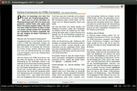

zathura
Dieser Artikel wurde für die folgenden Ubuntu-Versionen getestet:
Ubuntu 16.04 Xenial Xerus
Ubuntu 14.04 Trusty Tahr
Zum Verständnis dieses Artikels sind folgende Seiten hilfreich:
zathura  ist ein minimalistischer und schlanker Dokument-Betrachter, der neben PDF auch die Formate DjVu und PostScript anzeigen kann. Er setzt auf die Grafikbibliothek GTK 2 und kann entweder die PDF-Routinen von Poppler (siehe Evince) oder MuPDF verwenden (die Version aus den offiziellen Paketquellen basiert auf Poppler). Die Bedienung orientiert sich am Editor Vim, d.h. zathura wird ausschließlich über die Tastatur bedient.
ist ein minimalistischer und schlanker Dokument-Betrachter, der neben PDF auch die Formate DjVu und PostScript anzeigen kann. Er setzt auf die Grafikbibliothek GTK 2 und kann entweder die PDF-Routinen von Poppler (siehe Evince) oder MuPDF verwenden (die Version aus den offiziellen Paketquellen basiert auf Poppler). Die Bedienung orientiert sich am Editor Vim, d.h. zathura wird ausschließlich über die Tastatur bedient.
Das Programm bietet alle notwendigen Funktionen wie das Durchsuchen des Dokuments, Navigation durch den Index (sofern vorhanden) und Drucken. Ein Vorteil des Programms ist, dass außer einer Eingabezeile am unteren Rand der gesamte Bildschirm für die Darstellung des Dokuments genutzt wird. Bei Verwendung mit TeX unterstützt zathura, mit der Option -s aufgerufen, Quelltext-Betrachter-Synchronisation (vgl. Kile zur Erläuterung dieser Funktionalität).
Installation¶
zathura lässt sich über die offiziellen Paketquellen installieren [1]:
zathura (universe)
 mit apturl
mit apturl
Paketliste zum Kopieren:
sudo apt-get install zathura
sudo aptitude install zathura
Optional stehen noch Erweiterungen zur Verfügung:
zathura-ps (universe, Anzeige von PostScript-Dokumenten)
zathura-djvu (universe, Anzeige von DjVu-Dokumenten)
zathura-cb (universe, Anzeige von Dateien im Comic-Book-Format)
mit apturl
Paketliste zum Kopieren:
sudo apt-get install zathura-ps zathura-djvu zathura-cb
sudo aptitude install zathura-ps zathura-djvu zathura-cb
Bedienung¶

zathura kann über den Aufruf von zathura gestartet werden [2]. Außerdem wird das Programm ins Kontextmenü des Dateimanagers eingebunden. Wird also mit der rechten Maustaste  auf ein PDF-Dokument geklickt, steht die Auswahlmöglichkeit "mit Zathura öffnen" zur Verfügung. Zum Beenden des Programms genügt die Eingabe eines
: , gefolgt von
auf ein PDF-Dokument geklickt, steht die Auswahlmöglichkeit "mit Zathura öffnen" zur Verfügung. Zum Beenden des Programms genügt die Eingabe eines
: , gefolgt von quit und
⏎ .
Innerhalb von zathura kann mit einem Druck auf O eine Datei geöffnet werden, wobei der volle Dateipfad eingegeben werden muss. Hilfreich ist, dass das Programm durch einen Druck auf Tab ⇆ – wie z.B. die Bash – Autovervollständigen unterstützt.
Die folgende Tabelle zeigt einige Tastenkürzel zur Steuerung von zathura:
| Tastenkürzel | |
| Taste(n) | Funktion |
| J | Bildlauf nach unten |
| K | Bildlauf nach oben |
| H | Bildlauf nach links |
| L | Bildlauf nach rechts |
| ⇧ + J | Seite vorwärts |
| ⇧ + K | Seite rückwärts |
| G G | Sprung auf die 1. Seite |
| ⇧ + G | Sprung auf die letzte Seite |
[0-9]+
G | Sprung zur angegebenen Seite |
| S | Auf volle Seitenbreite skalieren |
| A | Auf Seitenhöhe skalieren |
| + | Darstellung vergrößern |
| - | Darstellung verkleinern |
/ SUCHBEGRIFF
⏎ | Vorwärts nach Suchbegriff SUCHBEGRIFF suchen |
| N | Suche vorwärts wiederholen |
| ⇧ + N | Suche rückwärts wiederholen |
| F | Alle Links auf der Seite anzeigen. Jeder Link erhält dabei eine Nummer. Gibt man diese gefolgt von ⏎ ein, wieder der Link angesprungen |
Daneben gibt es noch weitere Befehle mit einer VIM-ähnlichen Syntax, beispielsweise :bmark zum Setzen, :blist zum Anzeigen oder :delbmark zum Löschen von Lesezeichen (Bookmarks). Eine vollständige Übersicht aller Befehle findet man in der Manpage des Programms.
 Übersichtsseite
Übersichtsseite- Erstellt mit Inyoka
-
 2004 – 2017 ubuntuusers.de • Einige Rechte vorbehalten
2004 – 2017 ubuntuusers.de • Einige Rechte vorbehalten
Lizenz • Kontakt • Datenschutz • Impressum • Serverstatus -
Serverhousing gespendet von